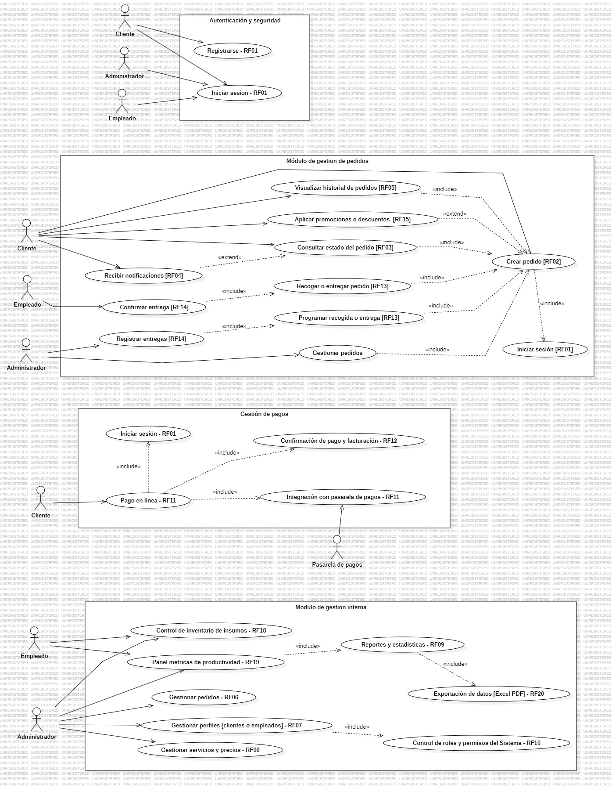
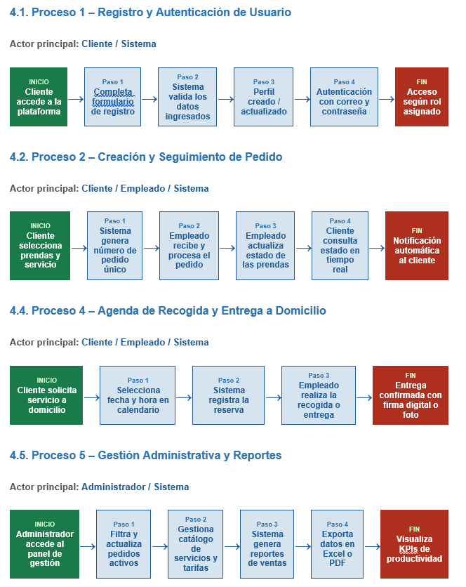
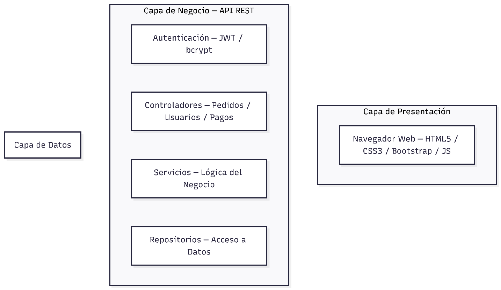
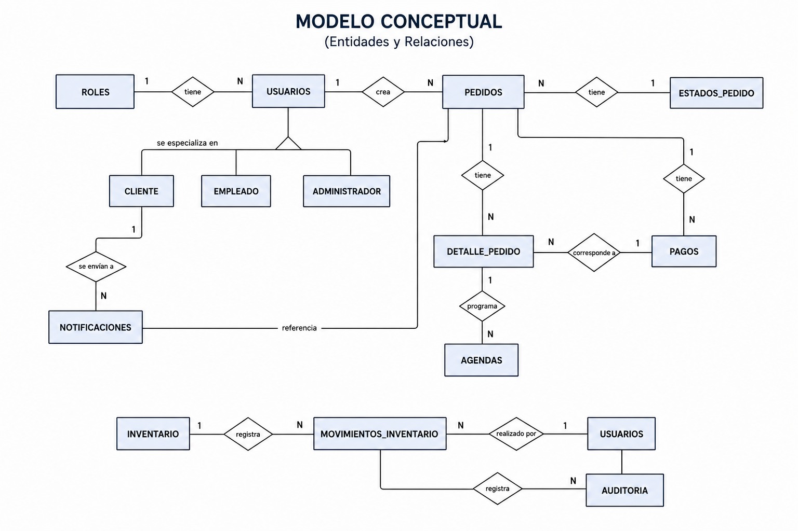
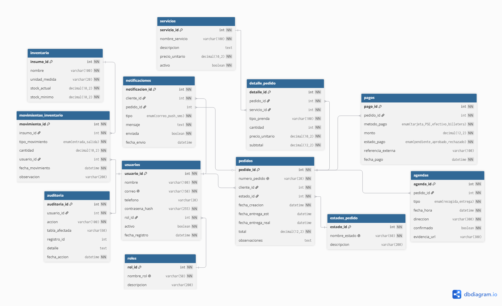

Un vistazo general al proyecto
LimpioYa es una plataforma pensada para modernizar la manera en que las lavanderías locales gestionan sus operaciones. Su propósito es conectar en un mismo entorno digital a dos actores clave del negocio: el cliente, que necesita saber en qué va su pedido y pagar en línea; y el administrador, que requiere visibilidad y control sobre pedidos, servicios y operación del negocio.
Cliente
Registra pedidos, hace seguimiento en tiempo real y paga en línea.
Administrador
Gestiona usuarios, servicios, precios y reportes del negocio.
El desarrollo del sistema se apoyó en la Norma IEEE 830 para estructurar los requisitos de software, priorizando la construcción de un Producto Mínimo Viable capaz de cubrir los procesos esenciales del negocio antes de escalar a funcionalidades más avanzadas.
La situación que originó el proyecto
Situación problema
En buena parte de las lavanderías locales, el cliente solo puede saber si su pedido está listo llamando por teléfono o acercándose personalmente al local. Esta dependencia genera incomodidad, confusión con las fechas de entrega y una pérdida de tiempo que afecta la percepción del servicio.
Puertas adentro, el panorama no es distinto: el control de los pedidos suele llevarse en cuadernos, planillas físicas o conversaciones de WhatsApp. Ese manejo manual da paso a errores administrativos, dificulta rastrear en qué etapa está cada prenda y termina traduciéndose en pérdidas de información e ineficiencias operativas.
Sin una herramienta digital especializada, estos negocios encuentran limitada su capacidad de crecer, competir y ofrecerle al cliente una experiencia acorde con las expectativas actuales.
Pregunta problema
¿Cómo digitalizar el registro, seguimiento y pago de pedidos en una lavandería local, de manera que se reduzcan los errores administrativos y el cliente pueda conocer en tiempo real el estado de sus prendas?
Hacia dónde apunta el proyecto
Objetivo general
Desarrollar una aplicación web que permita a las lavanderías gestionar sus pedidos de forma eficiente y digitalizada, brindando a los clientes la posibilidad de consultar en tiempo real el estado y la fecha de entrega de sus prendas, con el fin de optimizar la comunicación y la experiencia de uso.
Objetivos específicos
Permitir a los empleados registrar pedidos detallando prendas, servicios solicitados y fecha estimada de entrega.
Implementar un módulo de seguimiento que permita al cliente consultar el estado de su pedido: en proceso, listo o entregado.
Generar notificaciones automáticas que informen al cliente sobre cambios en el estado y la fecha de entrega de su pedido.
Ofrecer reportes y estadísticas de ingresos, clientes frecuentes y volumen de pedidos como apoyo a la toma de decisiones.
Integrar un módulo de pagos en línea compatible con pasarelas locales colombianas (PSE, tarjeta y billetera digital).
Generar de forma automática comprobantes de pago y facturas electrónicas al completar cada transacción.
Implementar un módulo de agenda para programar la recogida y entrega de prendas a domicilio.
Modelado del sistema
Espacios reservados para incorporar los diagramas propios del proyecto. Cada imagen puede ampliarse haciendo clic sobre ella.

Casos de uso
Interacciones entre los roles Cliente, Empleado y Administrador con las funcionalidades del sistema.

Diagrama de procesos
Flujo de los procesos clave: registro, creación de pedido, pago, agenda de entrega y gestión administrativa.

Diagrama de arquitectura
Representación de las capas de presentación, negocio y datos, y su comunicación mediante API REST.

Modelo conceptual
Entidades y relaciones de alto nivel identificadas a partir de los requerimientos del negocio.

Modelo lógico (ER)
Diagrama entidad-relación con tablas, llaves primarias/foráneas y relaciones para MySQL.
Cómo está construido el sistema
Arquitectura del proyecto
LimpioYa se organiza en una arquitectura de tres capas: la capa de presentación, construida con HTML5, CSS3, JavaScript y Bootstrap 5, gestiona la interacción con clientes, empleados y administradores; la capa de negocio, desarrollada en Node.js y Express, expone una API REST que concentra la lógica del sistema —registro de pedidos, pagos, notificaciones y control de acceso—; y la capa de datos, sobre MySQL, almacena toda la información a través del ORM Sequelize.
Justificación: esta separación permite avanzar en cada capa de forma independiente —mejorar la interfaz sin tocar el backend, o ajustar la base de datos sin afectar las pantallas—, mantiene el proyecto ordenado y facilita el mantenimiento, ya que un error puntual solo exige revisar el módulo implicado. Al ser un modelo ampliamente enseñado y adoptado en el desarrollo web actual, resulta además el punto de partida más adecuado para un proyecto de este nivel académico y deja abierta la puerta a un crecimiento futuro ordenado.
Patrones de desarrollo utilizados
Separa el sistema en Modelo, Vista y Controlador. El frontend cumple el rol de Vista, el backend el de Controlador y la base de datos el de Modelo.
Aísla el acceso a la base de datos del resto de la lógica de negocio, centralizando las consultas relacionadas con cada entidad.
Justificación: la combinación de estos dos patrones mantiene el código organizado y con responsabilidades claras, favorece la mantenibilidad al aislar la lógica de acceso a datos —de modo que un cambio de motor de base de datos afectaría únicamente a los repositorios— y prepara al sistema para escalar sin necesidad de reestructurar lo ya construido.
Estándares de programación utilizados
El proyecto sigue convenciones de nomenclatura consistentes: camelCase para variables, atributos y métodos; PascalCase para clases, controladores, servicios y repositorios; y snake_case para tablas y campos en la base de datos. A nivel de estilo se emplean 2 espacios de indentación en JavaScript, líneas de máximo 100 caracteres y llaves obligatorias en las estructuras de control, junto con los principios DRY, KISS y YAGNI como guía general de diseño del código.
Justificación: nombrar cada elemento de forma predecible y coherente reduce la curva de aprendizaje del código para cualquier persona que lo revise, y aplicar principios como DRY, KISS y YAGNI evita duplicación y complejidad innecesaria, lo que se traduce en un código más legible, fácil de depurar y de calidad consistente en todo el proyecto.
Metodología
El desarrollo de LimpioYa se gestionó bajo SCRUM, un marco de trabajo ágil que organiza el avance del proyecto en ciclos cortos e iterativos (sprints), permitiendo entregar funcionalidades de forma incremental, validar cada módulo a medida que se completa y ajustar prioridades conforme evoluciona el entendimiento del negocio.
Roles SCRUM
Al tratarse de un proyecto desarrollado por una sola persona, Kevin Ricardo Moreno Medalles asumió simultáneamente los tres roles definidos por el marco SCRUM.
Product Owner
Definió los requisitos, prioridades y el alcance funcional del producto.
Kevin Ricardo Moreno MedallesScrum Master
Organizó los sprints, gestionó el proceso ágil y removió obstáculos de avance.
Kevin Ricardo Moreno MedallesDevelopment Team
Diseñó, programó, probó y documentó cada uno de los módulos del sistema.
Kevin Ricardo Moreno MedallesManual de identidad
Logo
El logotipo de LimpioYa está compuesto por un isotipo que representa una lavadora en accion, acompañada de un tic de verificación azul que evoca la confianza. Transmite los valores de la marca: limpieza, modernidad, frescura y confianza.
Paleta de colores
Azul Principal
#1B6CA8
Encabezados, botones primarios y elementos de énfasis.
Azul Acento
#00B4D8
Íconos, elementos decorativos, gradientes y fondos de sección.
Azul Secundario
#2E86C1
Subtítulos, bordes de tarjetas y elementos secundarios.
Blanco Puro
#FFFFFF
Fondos principales y texto sobre fondo azul.
Gris Neutro
#F2F4F7
Fondos alternos de secciones y tarjetas de contenido.
Gris Texto
#555555
Texto de cuerpo, descripciones y texto secundario.
Negro Texto
#222222
Texto principal y títulos de alto contraste.
Tipografía
Poppins — Principal
Tipografía de palo seco geométrica usada en títulos, encabezados y elementos de marca. Se eligió por su carácter moderno y su excelente legibilidad en pantallas, reforzando la identidad tecnológica del proyecto.
Roboto — Secundaria
Tipografía humanista utilizada en el texto de cuerpo, descripciones e interfaces. Se seleccionó por su claridad en bloques largos de texto y su amplia compatibilidad en distintos dispositivos.
Prototipos en Figma
Enlaces a los prototipos navegables del proyecto. Los botones son fácilmente editables.
Prototipo de Escritorio
Experiencia de administrador y empleado optimizada para pantallas grandes.
Ver prototipo de escritorioPrototipo Móvil
Experiencia del cliente pensada para el seguimiento de pedidos desde el celular.
Ver prototipo móvil